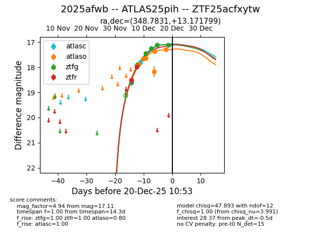
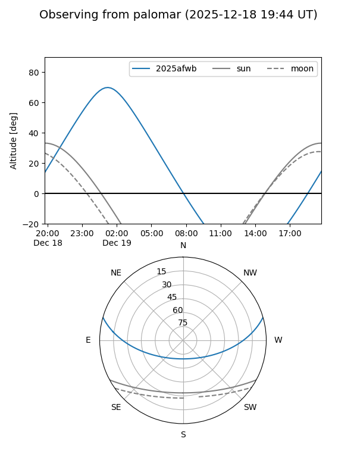

2025afwb
Target 2025afwb at 2025-12-24 16:25
Aliases and brokers:
FINK: fink-portal.org/ZTF25acfxytw
Lasair: lasair-ztf.lsst.ac.uk/objects/ZTF25acfxytw
ALeRCE: alerce.online/object/ZTF25acfxytw
TNS: wis-tns.org/object/2025afwb
YSE: ziggy.ucolick.org/yse/transient_detail/2025afwb
alt names
ZTF25acfxytw (ztf,fink_ztf)
2025afwb (tns,yse)
ATLAS25pih (atlas)
Coordinates:
equatorial (ra, dec) = 348.7831,+13.17180
equatorial (HMS+DMS) = 23:15:07.95,+13:10:18.48
galactic (l, b) = (89.7815,-43.41503)
Flags:
Photometry:
last atlasc=17.25, atlaso=17.38, ztfg=17.11, ztfr=17.21
3 atlasc, 7 atlaso, 5 ztfg, 3 ztfr detections
Lightcurve

Visibility


Additional plots